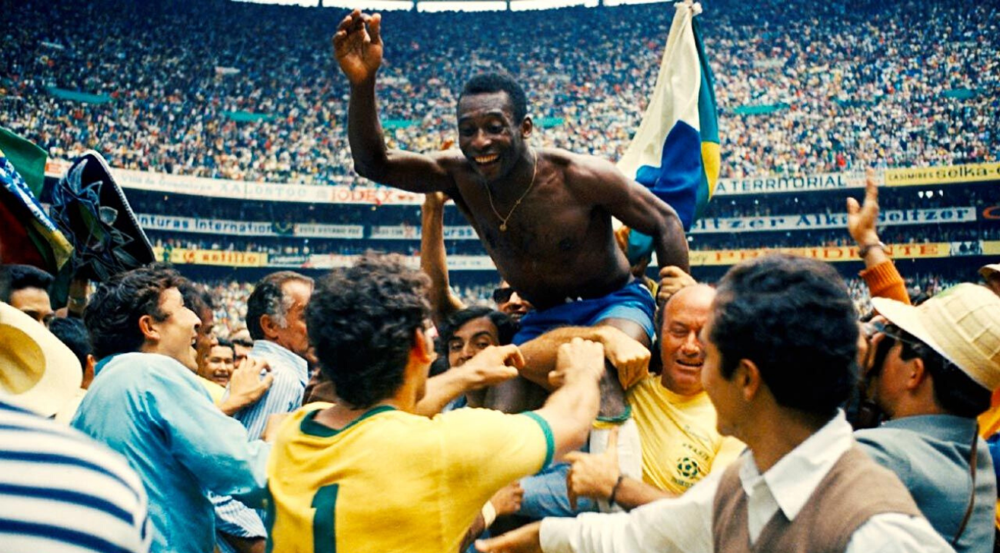
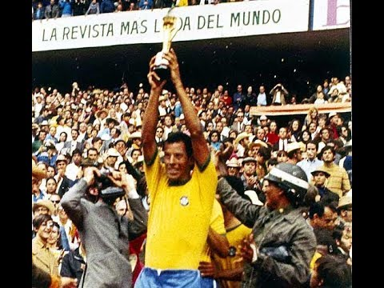
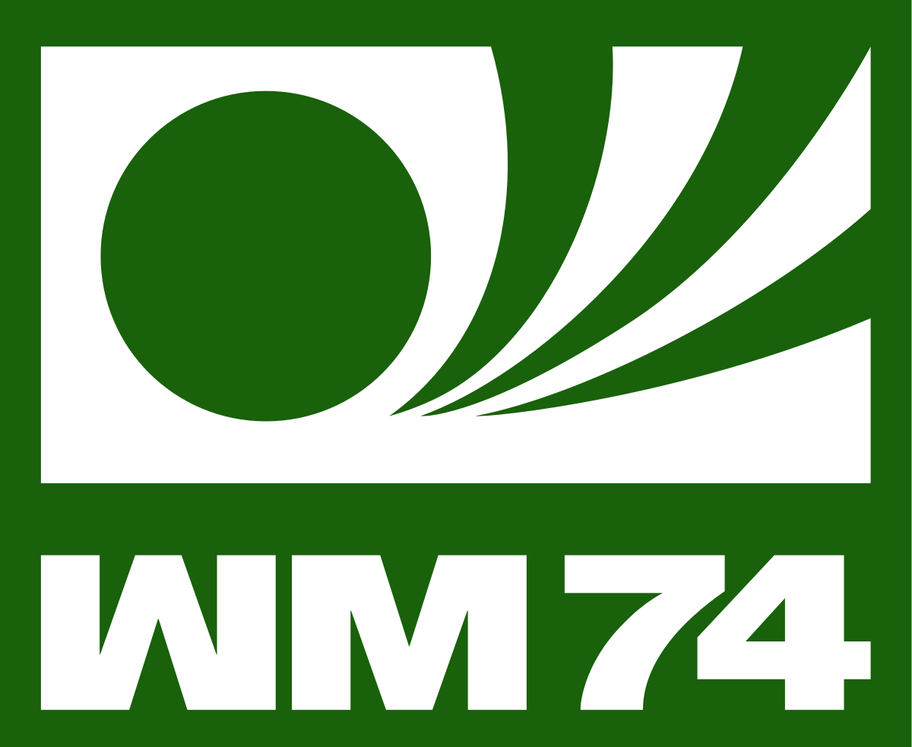

Seleção Brasileira na Copa de 1970 no México comemorando o terceiro título mundial do Brasil, o primeiro tri-campeão
Nos anos 70 a Copa do Mundo se revezou entre América do Sul e Europa novamente!
Ao fim das três, o Brasil conquistou o tricampeonato em 1970 no México, a Alemanha Ocidental ganhou sua segunda copa do mundo em casa em 1974 e a Argentina, dona da casa de 1978, conquistou seu primeiro título mundial.
México 1970
Copa do Mundo de 1970 sediada no México
Em 1970, a Seleção Brasileira, para evitar a repetição da decepção de 1966, realizou grande preparo físico e de organização antes da Copa, tendo sido considerada uma das melhores seleções brasileiras da história, senão a melhor. O técnico era Zagallo.
Uma campanha irretocável do Brasil. Na primeira fase, o Brasil derrotou todos os seus adversários: a bi-vice-campeã mundial Tchecoslováquia, a então campeã Inglaterra e a Romênia. Nas quartas-de-final, eliminou por 4–2 o Peru, treinado pelo brasileiro Didi. Nas semi-finais, o prelúdio de um possível tricampeonato: os então bicampeões mundiais Brasil e Uruguai se enfrentaram, com vitória brasileira por 3–1, com a vitória sendo saudada pelo público brasileiro como o "troco" pelo Maracanaço - e acabou sendo o "troco" definitivo mesmo, pois Brasil e Uruguai jamais voltaram a se enfrentar em Copas do Mundo.

Seleção Brasileira em 1970
Brasil e Itália, então bicampeões mundiais, duelaram na final, no estádio Azteca, no México, disputando o título de Primeira Seleção Tricampeã Mundial, que conquistaria em definitivo a Taça Jules Rimet. O Brasil venceria por 4–1, goleando sua rival.
Em 2007, a revista inglesa World Soccer, numa pesquisa realizada entre especialistas de futebol de todo o mundo, elegeu a seleção brasileira de 1970 como o maior time de futebol de todos os tempos.
Alemanha Ocidental 1974

Copa do Mundo de 1974 sediada na Alemanha Ocidental
Zagallo e sua equipe, agora sem Pelé, tentaram o tetracampeonato. Porém, a Seleção não resistiu à inovação colocada em campo pela Laranja Mecânica dos Países Baixos, sendo eliminada pela mesma, e acabou em quarto lugar na Copa, após perder a decisão de 3º lugar para a Polônia.
A partida entre Brasil e Países Baixos, que selou a eliminação brasileira, foi marcada pela violência de ambas as partes. Logo após a partida, Zagallo acusou o árbitro, o alemão-ocidental Kurt Tschenscher, de ter coibido apenas a violência brasileira, mas não a neerlandesa.[26] Em uma entrevista ao jornal Folha de S. Paulo em 2008, João Havelange acusou o árbitro de deliberadamente prejudicar o Brasil, como "retaliação" de Stanley Rous à vitória de Havelange na eleição para a presidência da FIFA em 1974: "Em 74, fui eleito [Fifa]. Era demais ser eleito e ganhar a Copa, cortaram-me todo o capim embaixo dos pés...; Ele chegou ao estádio para ver Brasil x Países Baixos, e o Stanley Rous me botou o [árbitro Kurt] Tschenscher, da Alemanha, que já tinha 50 anos e apitou o último jogo da carreira. E me jogou para córner."[22] Esse mesmo árbitro (Kurt Tschenscher) apitou Brasil 2–0 Bulgária, da Copa do Mundo de 1966, jogo após o qual ele foi acusado, pela Delegação Brasileira, de ter permitido extrema violência dos jogadores búlgaros contra os brasileiros, sobretudo contra Pelé.
Seleção Brasileira em 1974
Além disso, antes da realização daquele Brasil x Países Baixos, já se sabia que o vencedor da partida enfrentaria a Alemanha Ocidental na final da Copa, o que foi outro fator de críticas à escalação de Tschenscher, um alemão ocidental, para apitar aquela partida
Marinho Chagas, lateral da seleção brasileira na Copa de 1974, também afirmou em entrevista que "descontaram na seleção brasileira a vitória de João Havelange na eleição de 1974 para a presidência da FIFA", que por isso o Brasil "já sabia que não ia ganhar a Copa do Mundo" e que o local da partida foi alterado de Essen para Dortmund porque esta cidade era mais próxima à fronteira entre Alemanha e Países Baixos, de modo que na partida houvesse mais torcedores neerlandeses.
Argentina 1978
Copa do Mundo de 1978 sediada na Argentina
A Copa da Argentina é certamente a mais suspeita das Copas. Nesta Copa, o técnico Cláudio Coutinho criou uma das jóias do anedotário futebolístico ao afirmar que o Brasil foi o "campeão moral" da competição, por não ter perdido nenhuma partida; antes da Copa, Coutinho inovava o vocabulário futebolístico brasileiro, falando em "overlapping" e "ponto futuro".
No primeiro jogo, o Brasil empatou com a Suécia por 1–1. Neste jogo, um lance incomum: no último lance do jogo, há um escanteio a favor do Brasil. A bola é centrada na área e Zico marca o gol. Mas o árbitro galês Clive Thomas anulou o gol, argumentando que encerrou o jogo com a bola no ar. Porém, o vídeo do lance mostra claramente que foi apenas após a bola entrar no gol que Clive Thomas sinalizou o fim da partida. O Brasil ainda empatou com a Espanha em 0–0. E só se classificou para a segunda fase da competição ao vencer a Áustria no terceiro jogo por 1–0, gol de Roberto Dinamite. Mesmo com a derrota, a Áustria, que vencera os dois primeiros jogos, ficou com a outra vaga. Se Clive Thomas não houvesse anulado o gol de Zico, o Brasil teria terminado a primeira fase da Copa como primeiro colocado do Grupo, e não teria caído no mesmo grupo da Argentina na segunda fase da Copa; teria caído no outro grupo, e muito possivelmente teria tido mais sorte na Copa
Brasil na Copa do Mundo de 1978
Na segunda fase da Copa, no grupo de Brasil e Argentina, ocorreu uma das maiores (senão a maior) polêmicas da história das Copas. Na primeira rodada, o Brasil venceu o Peru por 3–0 e a Argentina passou pela Polônia por 2–0. Na segunda rodada, a Polônia derrotou o Peru por 1–0 (acabando com as chances peruanas de título), e logo depois argentinos e brasileiros empataram por 0–0 (acabando com as chances peruanas de chegar à decisão de 3º lugar). Este empate seria fatal para o Brasil. Na última rodada, o Brasil venceu a Polônia por 3–1. Com este resultado, restava à Argentina vencer o Peru por 4 gols de diferença, para poder chegar à final da Copa. A Argentina acabou vencendo por 6–0. Uma curiosidade: o goleiro peruano, Ramón Quiroga, era argentino de nascimento, e falhou em vários gols. Ademais, o horário dos jogos foi modificado, e o jogo Argentina x Peru foi disputado após o jogo Brasil x Polônia, dando à equipe argentina a vantagem de saber, de antemão, por qual resultado precisaria ganhar para chegar à final da Copa. A partida Argentina 6–0 Peru de 1978 gerou um número de "teorias da conspiração": de que os argentinos teriam "comprado" o jogo, ou que a ditadura argentina teria ameaçado os jogadores do Peru. Um fato real, confirmado posteriormente por jogadores do Peru, era que o então ditador Jorge Rafael Videla visitou o vestiário peruano antes do jogo, acompanhado do ex-Secretário de Estado dos EUA Henry Kissinger, e falou em "solidariedade latina".
Por outro lado, é bastante plausível que, dado que a Argentina entrou em campo contra o Peru já sabendo de antemão de que resultado ia precisar ganhar para chegar à final (4–0), tais "teorias da conspiração" iriam ocorrer de qualquer jeito, mesmo que a Argentina tivesse vencido por "apenas" 4–0 e não por 6–0. Assim, vale observar: se o Brasil (jogando em país neutro contra os peruanos) foi capaz de fazer 3–0 num Peru que naquele momento ainda tinha chances de ir à final da competição, será que a Argentina (jogando "em casa") não seria capaz de fazer 4–0 num Peru que naquela altura já não tinha chance de nada, nem de ir à final da competição nem à disputa de 3º lugar? Neste mesmo sentido, Ubaldo Fillol, o goleiro argentino, teria dito: "O Brasil não fez 3–0 em cima do Peru? Fez e teve chances de fazer mais. Acontece que nós dependíamos de quatro gols e aproveitamos todas as chances."
Ao Brasil, restou vencer a Itália na decisão de 3º lugar. A deleção, porém, jamais recebeu qualquer medalha, tornando-se a primeira e única vez em que uma Seleção que terminou em 3º colocado não foi premiada. Segundo a CBF "não há registro de entrada ou recebimento das medalhas pelo 3º lugar na Copa do Mundo de 1978 na CBF. No acervo cadastrado, está apenas uma placa pela participação da Seleção Brasileira, independentemente da posição, dada a todos os participantes.
Curiosidade: na Copa do Mundo, em 1966, o planejamento da Comissão Técnica do Brasil, antes do jogo contra Portugal, foi baseado na hipótese de que a Bulgária poderia "entregar" sua partida contra Hungria, na última Rodada da 1ª fase, beneficiando a Hungria e prejudicando o Brasil. Já na Copa de 1978, aparentemente a Comissão Técnica brasileira não cogitou a possibilidade de que o Peru poderia entregar seu jogo contra a Argentina.
A Copa do Mundo de 1978 foi a primeira organizada com João Havelange na presidência da FIFA. Ele afirmou acreditar que não houve nenhuma "armação" naquela Copa, preferindo culpar o próprio Brasil pelo seu insucesso, e ressaltando que, no jogo Peru x Argentina, o Peru acertou uma bola na trave no início do jogo, o que dificilmente configura uma postura de um time que queira "entregar" o jogo. Segundo Havelange: "Não tenho nada a ver, mas dias antes o Brasil jogou com o Peru. Fui ao vestiário e disse que precisava ganhar de muito para ter saldo de gols. Ficaram o tempo passando a bola: 3–0. E não se esqueça: o time do Peru estava na terceira Copa, todos tinham mais de 30 anos. Não faziam tecnicamente um jogo bonito, e eficiência física nenhuma. Quando o Brasil jogou com a Argentina, fui ao vestiário e disse que precisávamos ganhar o jogo para sermos campeões. Disseram-me que iam jogar pelo empate. Lembre-se de que o Rivellino não entrou em campo. Empatamos. O Peru jogou e, se o senhor vir o filme do jogo, com dez minutos botou uma na trave. Se entra, tinha ganho de 10–0. O time do Peru não tinha perna para jogar."